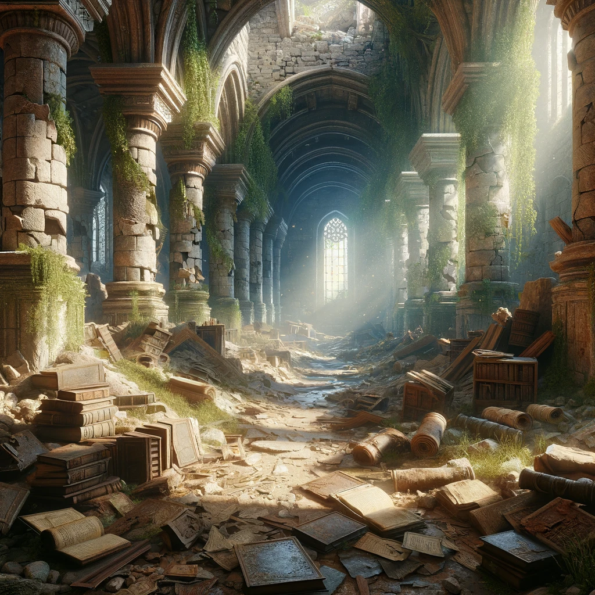

You Gain important background information that could help in solving puzzles later.
You now arrive at the Ancient Library
Choices after reviewing notes or arriving.
Search the history section:
Elara finds herself surrounded by towering shelves. She pulls down a dusty tome titled "Secrets of Eldorian Artifacts," which includes a map fragment showing the entrance to the Whispering Woods.
Ask the librarian for help:
The librarian, an old man with knowing eyes, hands Elara a slip of paper with a poem: “Where whispers fade, the silent stones sing, beneath the moon's silver wing.”
